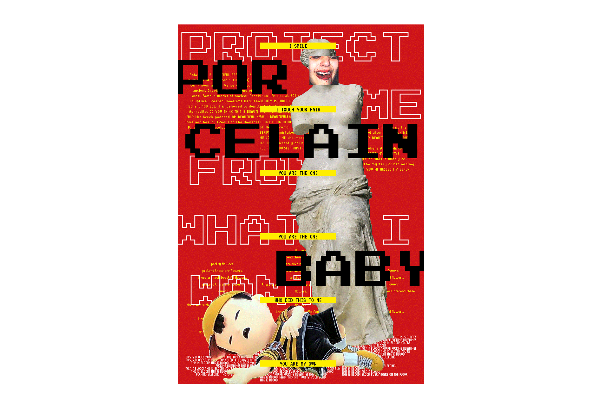
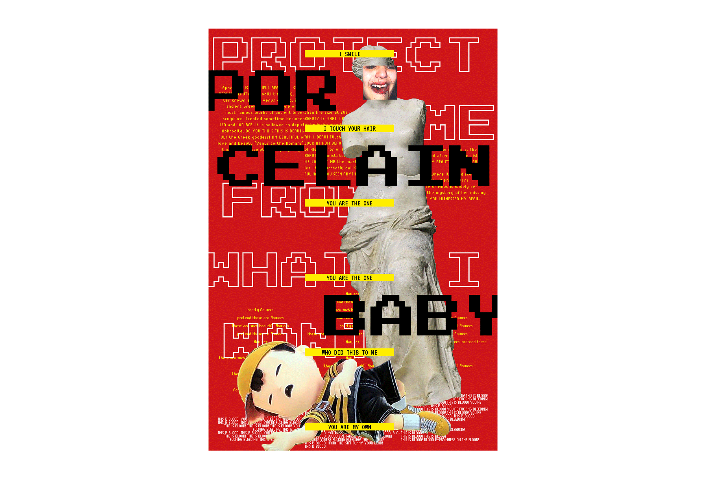
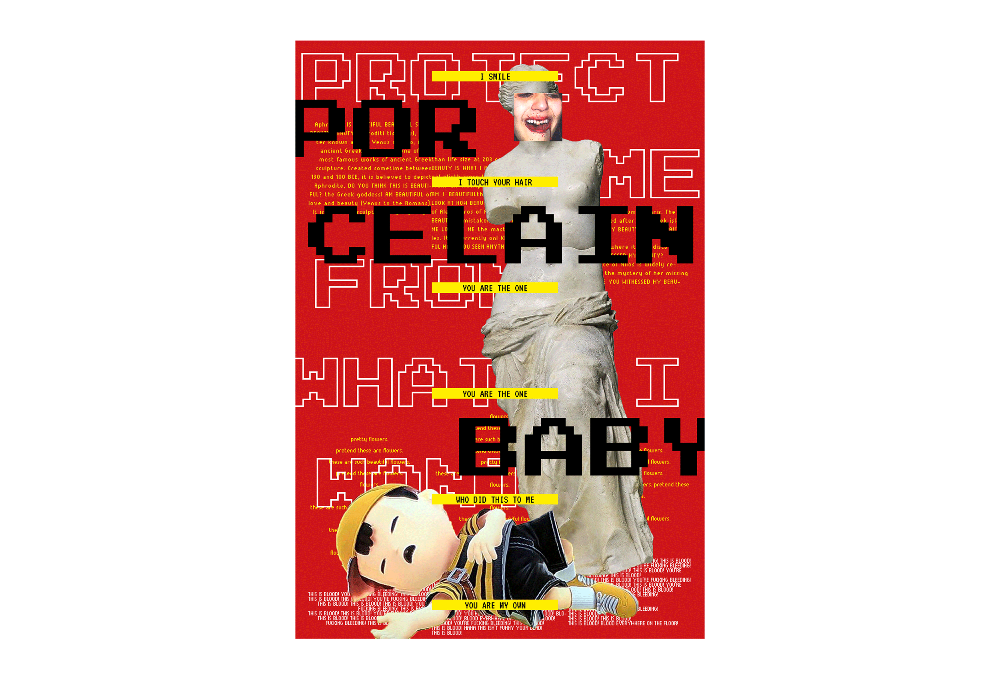
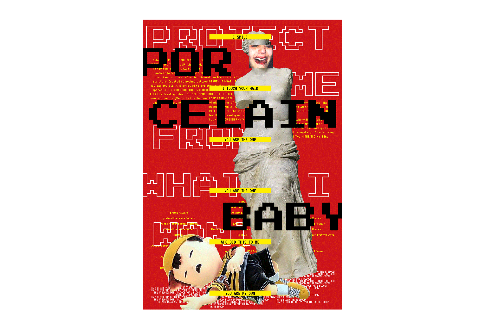

 

PORCELAIN BABY stems from my personal frustration with design and how it has also become both a hunt and a struggle to generate something original. I have come to terms [almost] with the idea that nothing can be formed originally; however, new combinations that are successful will be viewed with the same light as something original.
Throughout this book you will find highly saturated colors as well as text that has been shaped. These elements are intended to serve as impactful distractions to the viewer.
The phrase “Porcelain Baby” is an oxymoron in itself - porcelain, is one of the most prestigious types of pottery, and its utilization has been mimicked and copied for centuries. The idea of a baby - something that is new and pure; complete innocence. These two ideas create an interpretation of what is new to the eye today, what is pure, with the overwhelming pressure of thousands of artists whom have come before us. These ideas also question what beauty means and what we as designers define beauty as and how we strive to perfect our interpretation of it.
This system consists of an “art book” and a screen print. My intent was to visualize the different standards of beauty and art with my current lens and aesthetic. I hope for these elements to serve as a thesis for my own definition of art and aesthetic - fused with those of our predecessors.
The print serves more as a test of working with so many visual elements, of trying to create a balanced piece where each element can also work alone. The print piece focuses more on these ideas but made personal.
The definition of art has been conceived through looking at inspiration as well as points of memory from my past have defined successful art as art that transports the viewer, a space where one is able to escape to for a amount of time - where the viewer is completely entranced by the medium and is able to fully experience it without distractions from our world. I began by exploring key civilizations throughout history with an emphasis on the cultures’ ideology of beauty and aesthetics and interpreted them, presenting my view on predeceasing beauty in a way I think is beautiful.